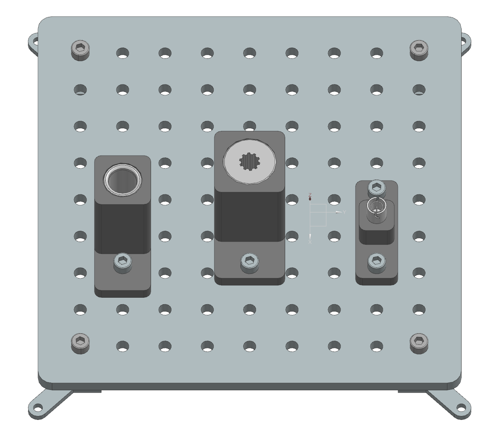
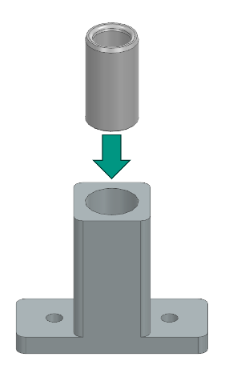
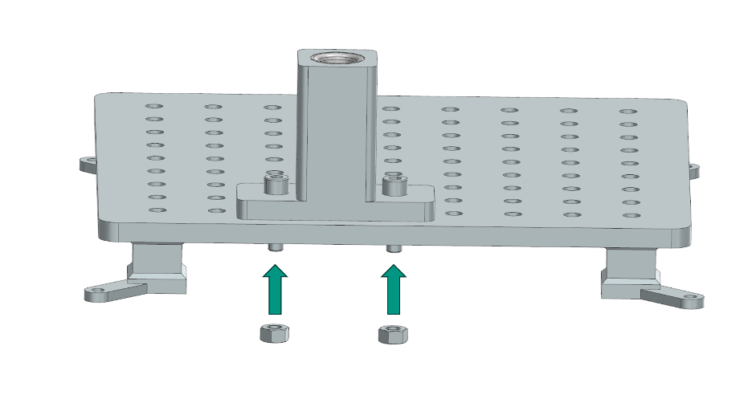

Assembly Instructions: Peg-in-Hole
This section provides step-by-step instructions for assembling the Peg-in-Hole task module of the Industrial Assembly Task Board. The module consists of a round peg and a splined shaft peg that need to be inserted into their respective holes. In contrast to other boards such as the NIST peg-in-hole tasks the focus here is on tight tolerances and precise insertion of the pegs into the holes, rather than on complex peg and hole geometries.
{kind=link}
Task 1: Round Peg in Hole
Step 1: Prepare the Components
Step 2: Inserting the Plain Bearing into the Hole component
Push the Plain Bearing from the top with force to insert it into the Hole Round component.
{kind=link}
Step 3: Manual Fixation of the Assembly on the Task-Board
Align the two side holes of the Assembly part with two suitable holes on the Taskboard. Then push two 30mm M8 screws through the aligned holes and secure them from the bottom of the Taskboard with two M8 nuts.
{kind=link}
Step 4: Placing the Round Shaft
Place the Shaft standing on a flat surface next to the task board so that the robot can grasp it.
Task 2: Splined Shaft Peg in Hole
Step 1: Prepare the Components
Step 2: Inserting the Plain Bearing into the Hole component
Push the Splined Shaft Sleeve from the top with force to insert it into the Hole Splined Shaft component as shown in Task 1.
Step 3: Manual Fixation of the Assembly on the Task-Board
Align the two side holes of the Assembly part with two suitable holes on the Taskboard. Then push two 30mm M8 screws through the aligned holes and secure them from the bottom of the Taskboard with M8 Nuts.
Step 4: Placing the Splined Shaft
Place the Splined Shaft on a flat surface next to the Taskboard, so that the robot can grasp it.
Task 3: BNC Connector
Step 1: Prepare the Components
Step 2: Inserting the Female BNC-Connector into the Mounting Component
Push the Female BNC-Connector from the top with force to insert it vertically into the Hole on the Mounting BNC Connector component.
Step 3: Manual Fixation of the Assembly on the Task-Board
Align the two side holes of the Assembly part with two suitable holes on the Taskboard. Then push two 30mm M8 screws through the aligned holes and secure them from the bottom of the Taskboard with M8 nuts.
Step 4: Placing the Splined Shaft
Place the Male BNC-Connector on a flat surface next to the Taskboard, so that the robot can grasp it.